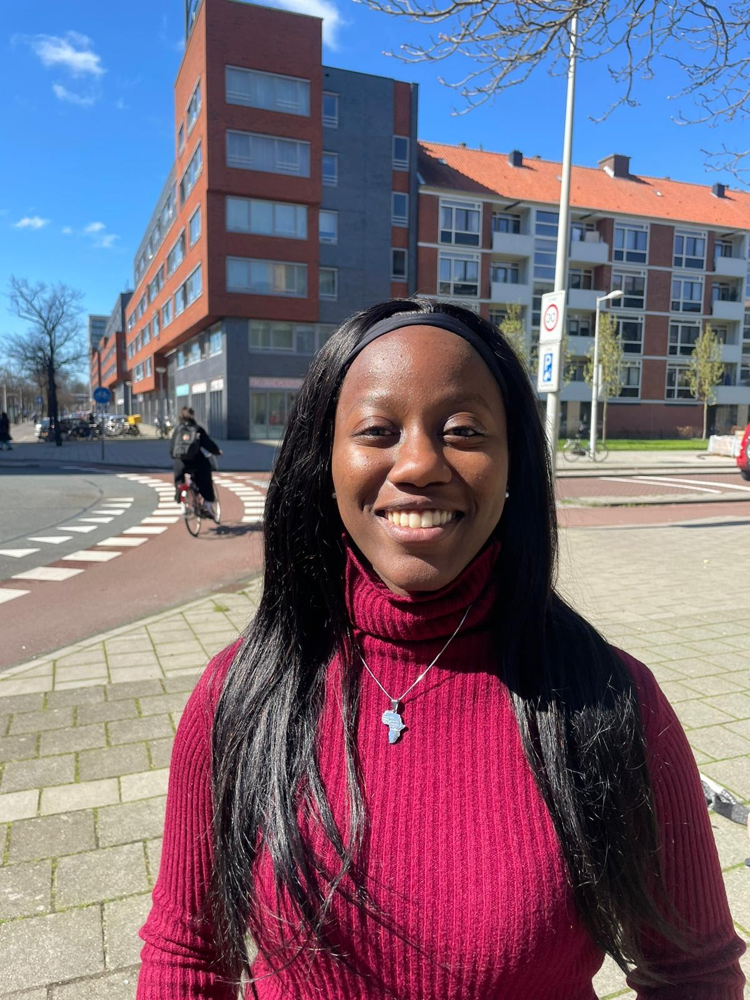

Lisa Vandros Tendo - The gift within
This is where it all started. The time to let everything out. Everyone has their own way how they cope with their feelings. I came to a point that i began to acknowledge that what i feel is worth something. That worth can change things, people and so much more. Instead of overthinking about everything and keeping it to myself. After writing this I realized that words are very powerful that it can change lives. I have been writing for over 4 years now and doing voice over for 1 year now. We all have something deep within us and that needs to be let out. To encourage other people. This is where it all started. The time to let everything out. Everyone has their own way how they cope with their feelings. I came to a point that i began to acknowledge that what i feel is worth something. That worth can change things, people and so much more. Instead of overthinking about everything and keeping it to myself.
my poetry
Hi I'm Lisa I'm a voice artist by heart and a writer by soul. Besides writing I love to spend time with my family, eat and to be more knowledgeable about the world. people and cultures. Connecting with people is what matters to me.